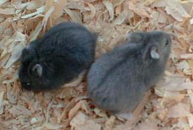
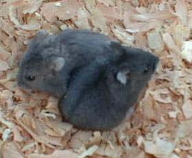
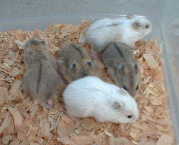
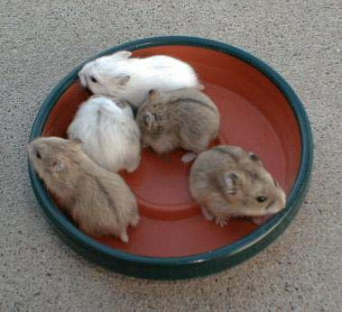

| Potential New Color Gene in the Campbells Page 4 |
| I now have multiple litters of both the Moscow and Black carriers as well as the Moscow and Opal carriers. Here are the results so far of each of these pairings. I have a trio of normals. They are littermates and each carry Moscow and black. The first litter has six babies: four normals, one black, and one who appears to be the combined color. It is a very interesting color and not really what I expected. The closest color he looks like to me is a charcoal gray. When he was young, he reminded me more of a blue than of a chocolate. I had expected chocolate due to the similarity of the Moscow color to the BEA color. Here are a couple of pictures of the Moscow/black combined color along with his black sibling. He shows some similarity to a dilute black. I ruled out dilute black since he does not have the tipping and different shadings I see in my dilute blacks. |
|  |
|  |
| My Moscow/opal trio consists of a male and female normal and a platinum female. They are all littermates. Their father is an opal platinum who I knew might carry dilute. The plat female had the first litter. Here are her five babies. There are two normals, one Moscow, and two plats. I can't be sure of the color on the plat babies -- particularly the lighter one. The darker one looks a lot like her mother and is probably a normal plat. Neither of the plats has ruby eyes. The normal mother has a younger litter. There are two normals, an opal, and what appears to be the combined color. I'll update this as soon as they get big enough. |
|  |
|  |